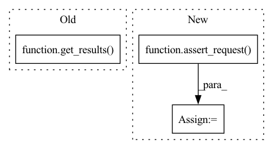

Pattern ID :27299
Before Change
flow_id = r
print(f"Flow created with id {flow_id}")
texts_matched = get_results(query="text:anything will match the same")
assert len(texts_matched["search"]["docs"][0]["matches"]) == 10
assert_request(method="get",
url=f"http://localhost:8000/flows/{flow_id}")After Change
assert query_flow_id is not None
print(f"\nQuerying any text")
r = assert_request(method="post",
url="http://0.0.0.0:45678/api/search",
payload={"top_k": 10, "data": ["text:anything will match the same"]})
print(f"returned: {r}")
texts_matched = r["search"]["docs"][0]["matches"]
assert len(texts_matched) == 10
In pattern: SUPERPATTERN
Frequency: 3
Non-data size: 3
Instances Fragment ID: 81105456
Project Name: jina-ai/jina
Commit Name: f570ef79823b4f2d29aad424fe5342959a411e0f
Time: 2021-01-25
Author: deepankar.mahapatro@jina.ai
File Name: tests/distributed/test_index_query_with_shards/test_integration.py
M Class Name: AnonimousClass
N Class Name: AnonimousClass
M Method Name: test_flow(1)
N Method Name: test_flow(1)
M Parent Class:
N Parent Class:
M File Name: tests/distributed/test_index_query_with_shards/test_integration.py
N File Name: tests/distributed/test_index_query_with_shards/test_integration.py
M Start Line: 16
M End Line: 41
N Start Line: 16
N End Line: 51
Before Change
payload={"top_k": 10, "data": [expected_text]})
print(f"Response is: {response}")
text_matched = get_results(query=expected_text) ["search"]["docs"][0]["text"]
print(f"Returned document has the text: {text_matched}")
assert_request(method="get",After Change
print(f"Response is: {response}")
print(f"\nQuerying any text")
r = assert_request(method="post",
url="http://0.0.0.0:45678/api/search",
payload={"top_k": 10, "data": ["text:anything will match the same"]})
print(f"returned: {r}")
text_matched = r["search"]["docs"][0]["matches"][0]["text"]
assert expected_text == text_matched
Fragment ID: 81105453
Project Name: jina-ai/jina
Commit Name: f570ef79823b4f2d29aad424fe5342959a411e0f
Time: 2021-01-25
Author: deepankar.mahapatro@jina.ai
File Name: tests/distributed/test_simple_hub_pods/test_integration.py
M Class Name: AnonimousClass
N Class Name: AnonimousClass
M Method Name: test_simple_hub_pods(1)
N Method Name: test_simple_hub_pods(1)
M Parent Class:
N Parent Class:
M File Name: tests/distributed/test_simple_hub_pods/test_integration.py
N File Name: tests/distributed/test_simple_hub_pods/test_integration.py
M Start Line: 16
M End Line: 34
N Start Line: 16
N End Line: 31
Before Change
query_flow_id = create_flow(flow_yml, pod_dir, workspace_id=r["workspace_id"])
assert query_flow_id is not None
r = get_results(
query="text:anything will match the same") ["search"]["docs"][0]
print(f"returned: {r}")
text_matched = r["matches"][0]["text"]
assert text_matched == "text:hey, dude"After Change
assert query_flow_id is not None
print(f"\nQuerying any text")
r = assert_request(method="post",
url="http://0.0.0.0:45678/api/search",
payload={"top_k": 10, "data": ["text:anything will match the same"]})
print(f"returned: {r}")
text_matched = r["search"]["docs"][0]["matches"][0]["text"]
assert text_matched == "text:hey, dude"
Fragment ID: 81105451
Project Name: jina-ai/jina
Commit Name: f570ef79823b4f2d29aad424fe5342959a411e0f
Time: 2021-01-25
Author: deepankar.mahapatro@jina.ai
File Name: tests/distributed/test_index_query/test_integration.py
M Class Name: AnonimousClass
N Class Name: AnonimousClass
M Method Name: test_index_query(1)
N Method Name: test_index_query(1)
M Parent Class:
N Parent Class:
M File Name: tests/distributed/test_index_query/test_integration.py
N File Name: tests/distributed/test_index_query/test_integration.py
M Start Line: 16
M End Line: 44
N Start Line: 16
N End Line: 56